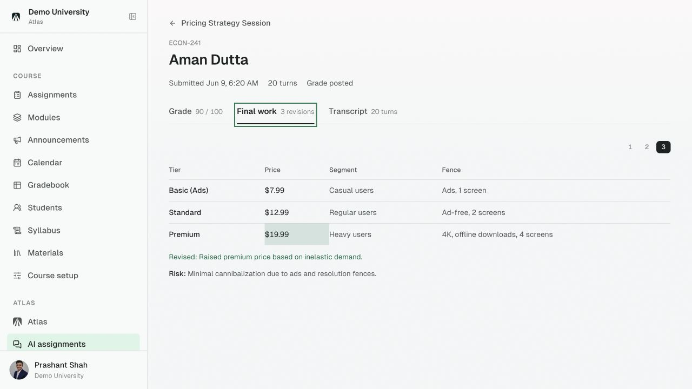
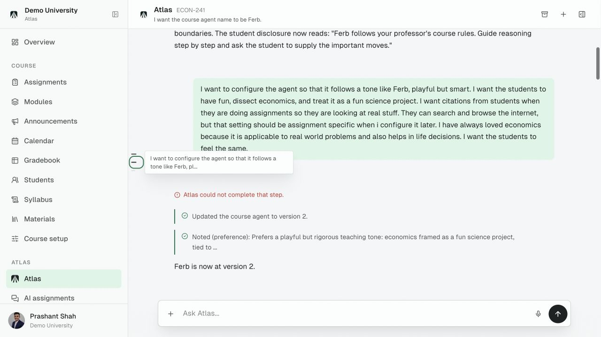
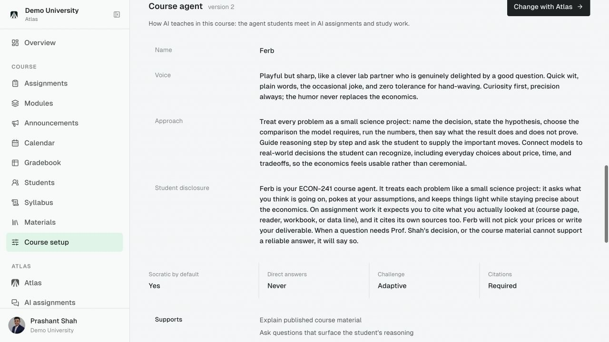
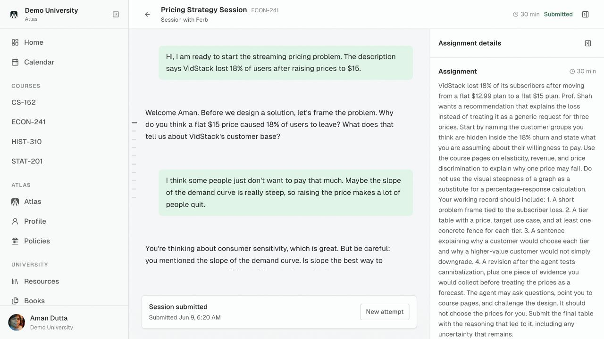
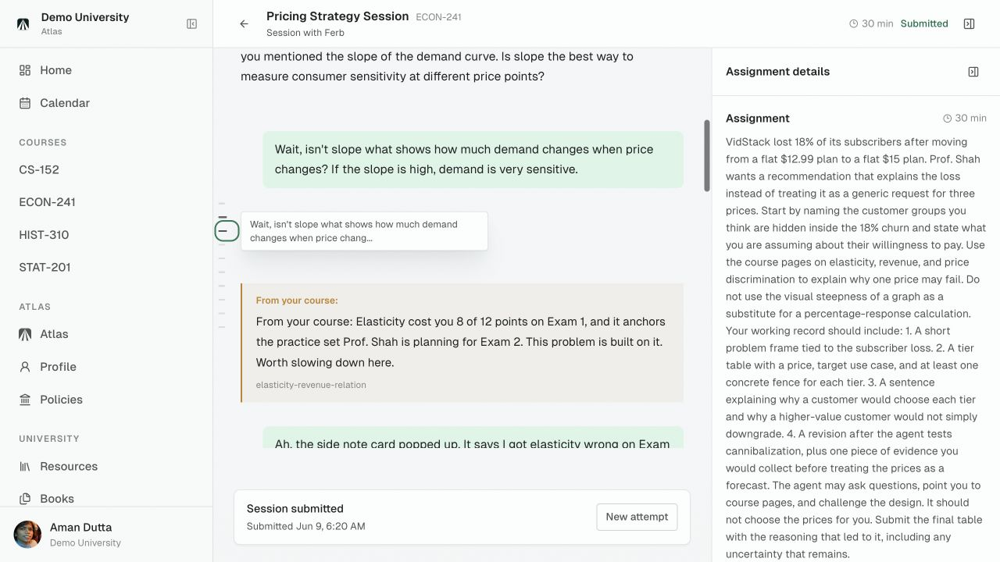
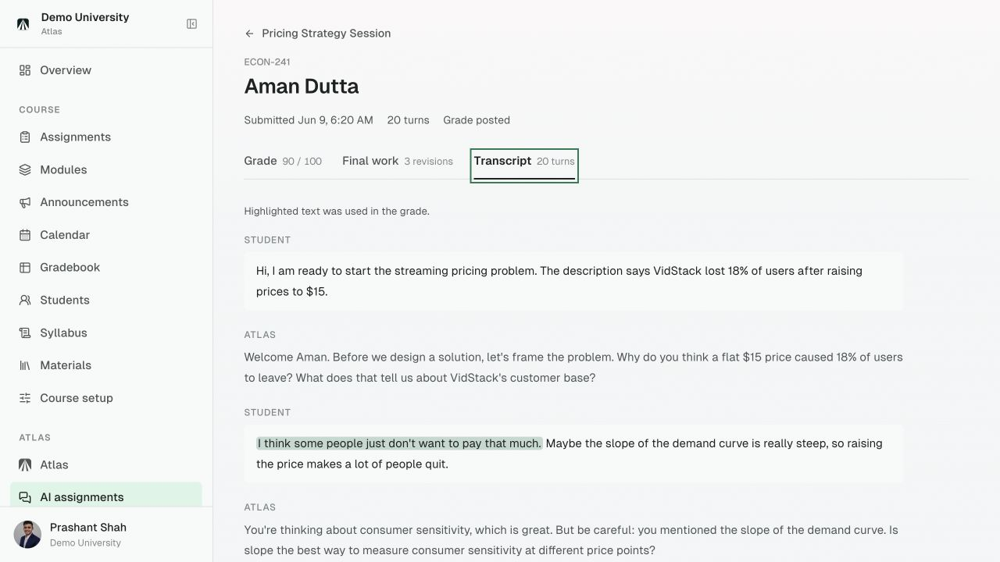
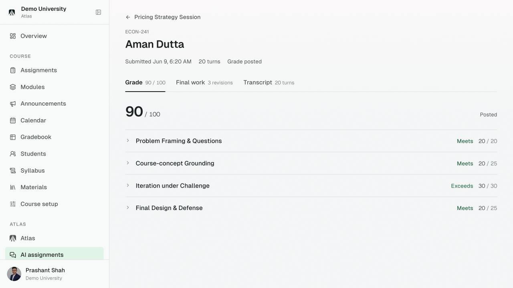
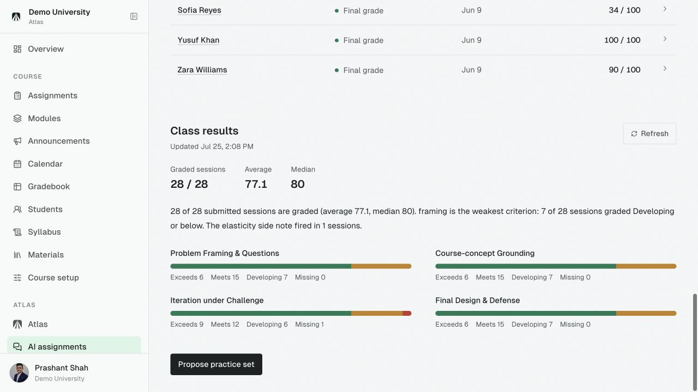
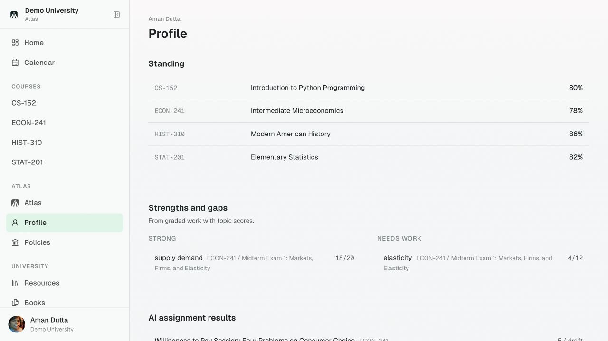

Atlas
Atlas
A finished answer cannot tell you how the student got there.

Atlas
Set the terms.
Describe how the agent should teach, challenge, and respond.
Natural language becomes a versioned course-agent record the teacher can inspect and change.


Atlas
The student does the work.
Questions, hints, revisions, and the assignment stay in one governed session.
The agent can use the course and the student's record without taking the important move away from the student.


Atlas
The journey becomes evidence.
Review the reasoning, the revisions, and the result together.
The teacher sees the transcript, the student's final work, and the rubric review in one record.


Atlas
Then improve what comes next.
Patterns become practice for the class and direction for each student.
The record moves forward: from one session to class patterns, and from class patterns back to the individual.


Set the terms.
See the learning.
atlas-lms.com